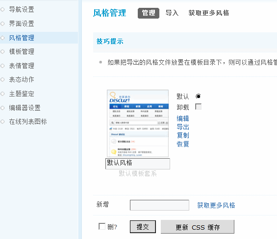
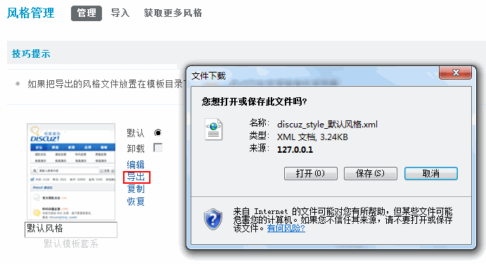
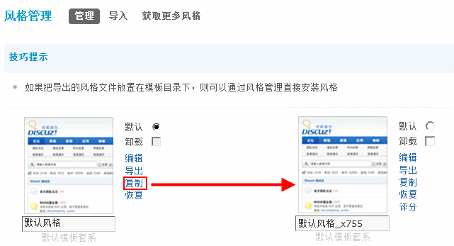
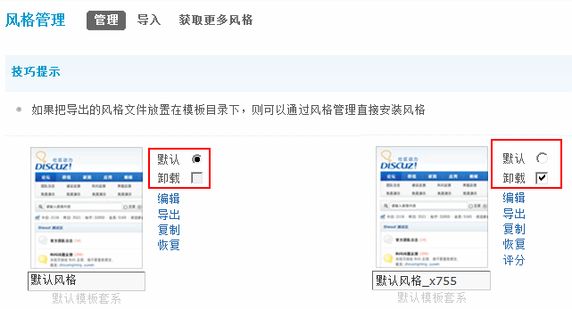
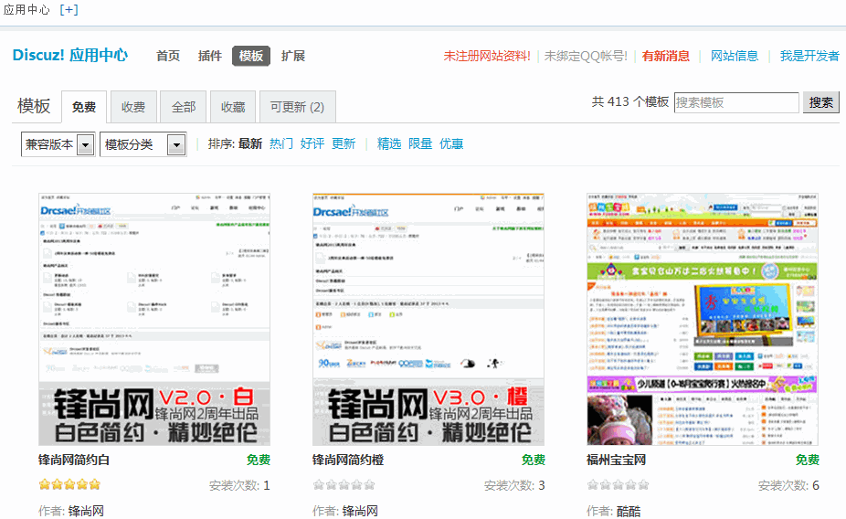

风格管理
站长通过风格管理，可以设置论坛的默认风格；也可以调整正在使用中的风格配色，包括页面的颜色、背景等显示；还可以修改字体的大小等；同时还可以导入自己下载下来的风格、导出已有的风格。操作路径：【后台】=>【界面】=>【风格管理】
一、风格管理
在风格管理中，可以对现有的风格进行编辑、导出、复制和恢复。
1、编辑
在对风格进行编辑时，可以对该风格的各项详细参数进行设置，如配色、风格图片目录、背景、字体大小、各区域颜色等。
2、导出
可以将现有的风格导出到本地保存。
3、复制
可以复制出一套一模一样的风格
4、恢复
如果通过上面的编辑，修改了原有风格的设置项，想还原的话，可以直接点击该风格中的“恢复”链接，即可马上恢复，恢复风格后，界面的方案将恢复到初始设置。
5、选择与卸载
设置该风格是否为使用的默认风格，以及对风格进行卸载，都可以通过勾选相应的操作选项来进行。
二、风格导入
使用导入功能，可以将本地的风格导入到线上进行使用。站长可通过两种方式进行风格的导入：上传文件方式或粘贴文本方式。两者的效果是一样的，数据来源也是一样的。
导入风格时，建议导入的风格最好要与所使用的程序版本一致，否则容易产生错误。
三、获取更多风格
如果站长对程序内置及手中的风格都不甚满意，更可点击“获取更多风格”，登录 Discuz! 应用中心。广大站长可以方便快捷地获取更多更优秀的开发者们设计的模板风格。
